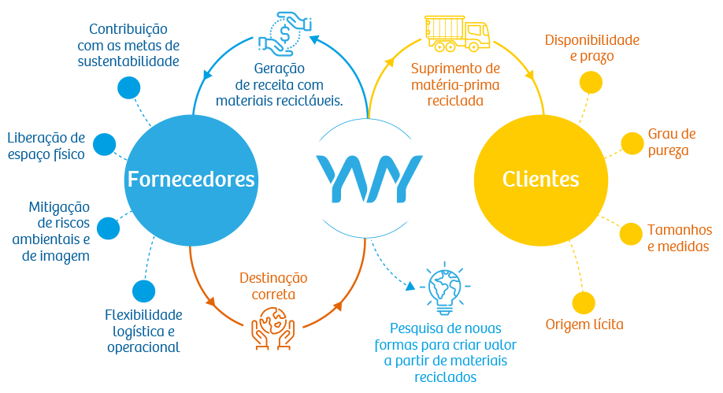
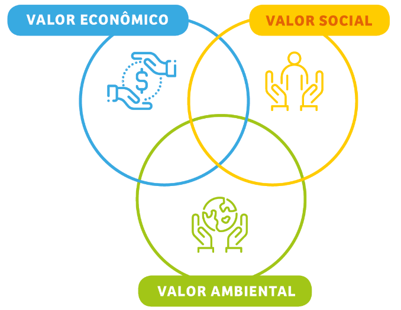
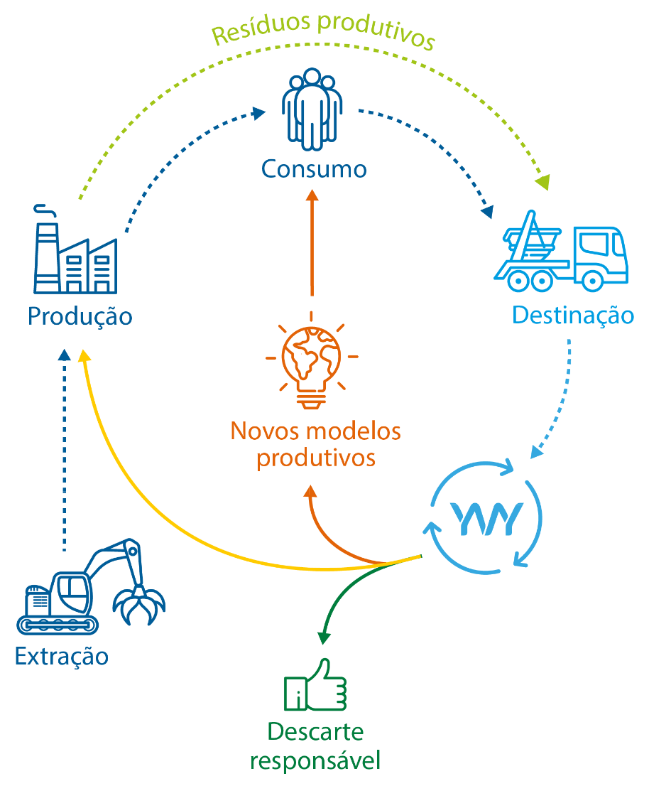

A escolha deste nome traduz toda nossa gratidão pelo planeta Terra, pois é dela que retiramos tudo que precisamos para dar corpo e forma à imaginação humana.
Para nós, cuidar para que os resíduos produtivos tenham destinação correta e voltem à cadeia produtiva é uma forma de contribuir para reduzir o volume de descarte sobre os aterros sanitários e atenuar a pressão ambiental gerada pela produção de matéria-prima virgem. É uma forma de praticar nossa responsabilidade e expressar nosso respeito ao planeta e às próximas gerações.
Um novo olhar na busca de soluções cada vez mais eficientes para transformar resíduos em matéria-prima para os mais diversos processos produtivos.
Enxergamos o ciclo da reciclagem como um ecossistema
onde o sucesso de um é dependente do sucesso do todo.

Fazendo a diferença na cadeia de reciclagem
A criatividade, que começa na forma como olhamos para os desafios, culmina em soluções tecnológicas e de processos em uma constante busca por fazer mais com menos e melhor.
Aqui o espírito de inovação é o nosso
antídoto à acomodação.
Investimos constantemente em nossa equipe, instalações e equipamentos para assegurar máxima qualidade, eficiência e segurança em nossa operação.
Atuamos com proximidade e proatividade na hora de ouvir, para compreender as expectativas e necessidades de fornecedores, que se beneficiam de nossas contribuições na execução de seus planos de sustentabilidade e de clientes, que podem contar com flexibilidade e comprometimento no fornecimento de matéria-prima reciclada de qualidade, de origem lícita.
Pautados pelos princípios da sustentabilidade, atuamos para promover o equilíbrio econômico, social e ambiental, além de nos posicionarmos contra práticas ilícitas na captação e comercialização de materiais de origem duvidosa e descarte de não recicláveis em locais inadequados, que colocam em risco o meio ambiente.
A reciclagem gera valor para toda sociedade.
Na Yvy nos empenhamos em gerar valor a partir de três eixos:
Econômico
Geração e circulação de riqueza ao longo dos processos logísticos e de produção, que transformam resíduos em matéria-prima de qualidade para indústrias dos mais diversos segmentos.
Ambiental
A própria natureza do nosso negócio está diretamente ligada à agenda ambiental, tanto pela redução da pegada ambiental dos processos produtivos, ao gerar matéria-prima reciclada e reduzir os impactos com a produção de matéria-prima virgem, quanto pela destinação correta dos materiais não recicláveis.
Em nossas operações buscamos soluções para redução do consumo de água, energia e combustíveis.

Lógica Reversa
Atentos aos desafios da “responsabilidade compartilhada pelo ciclo de vida dos produtos” regulamentada pela PNRS – Política Nacional de Resíduos Sólidos, estamos capacitados e aparelhados para desenvolver as soluções mais adequadas para atender às demandas de logística reversa de empresas dos mais diversos segmentos do mercado: desde soluções para captação dos resíduos, até a sua destinação mais adequada, passando pelos processos logísticos e de beneficiamento dos materiais.
